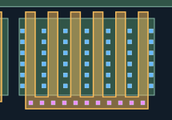
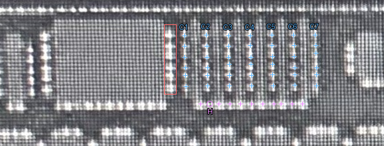

本轮局部增加共栅横带；已审源漏CT与AA保持不变。红框为排除的宽MOS孔列；蓝色C1–C7为当前七列，最右C7现已纳入。边界坐标由AI据用户定性反馈定位，仍待复核。
42个源漏CT与共栅POLY横带已确认。栅CT共11个：保留此前10个，并将用户确认的橙色位置纳入。 所有原有52个CT记录不变。紫色为栅CT，蓝色为源漏CT。
原图H表示人工确认的原待核位置，其图上落点仍是原孔列推算定位；没有伪造算法检出的亮峰。 局部几何通过不代表真实工艺DRC或M1连接已确认。其他区域未覆盖。
检查六栅共用横带及其接触；其他区域未覆盖。

